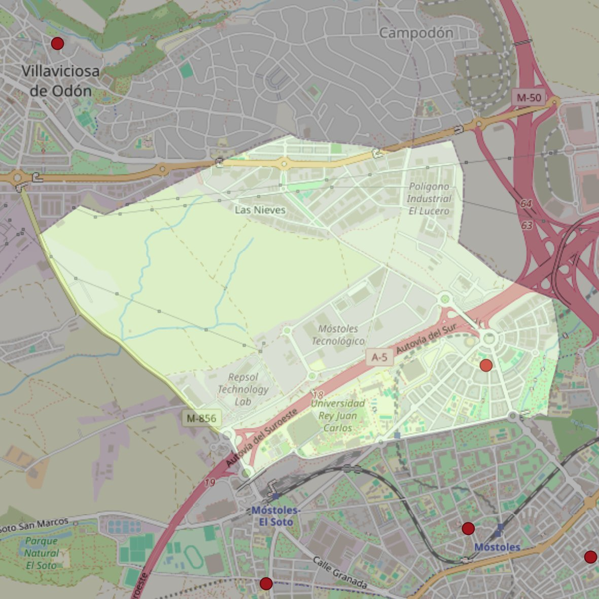

San Juan de Ávila

- Arciprestazgo
- Móstoles
- Población
- Móstoles
- Dirección postal
- c/ Orquídea, 5
- Código postal
- 28933
- Extensión
- 6,05 km² (605 ha)
- Teléfono
- 916 645 825
- Correo electrónico
- sjavilamostoles@gmail.com
Límites territoriales según el decreto
"Partiendo de la confluencia de la Avenida Alcalde de Móstoles con la calle Tulipán, arrancan por el eje de la Avenida Alcalde de Móstoles hasta la rotonda donde desemboca la calle Margarita (en dirección noreste); continúan hasta el límite con el término municipal de Alcorcón (en dirección este y por una línea recta imaginaria); por la línea divisoria de los términos municipales de Móstoles y Alcorcón (en dirección noroeste); por los límites de los términos municipales de Móstoles y Villaviciosa de Odón (en dirección oeste), y por el eje de la carretera de Villaviciosa de Odón-Móstoles (en dirección sureste) hasta el punto en que, por una línea recta imaginaria y por el eje de la Avenida Alcalde de Móstoles, se encuentran con la confluencia de la Avenida Alcalde de Móstoles con la calle Tulipán, punto de partida".
(Decreto de erección de 27-5-99; boletín de junio de 1999, pág. 641)